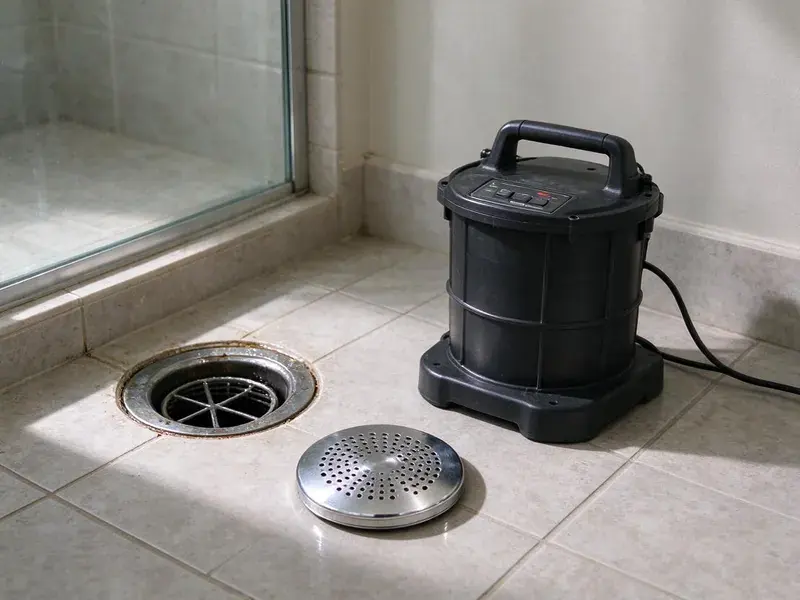
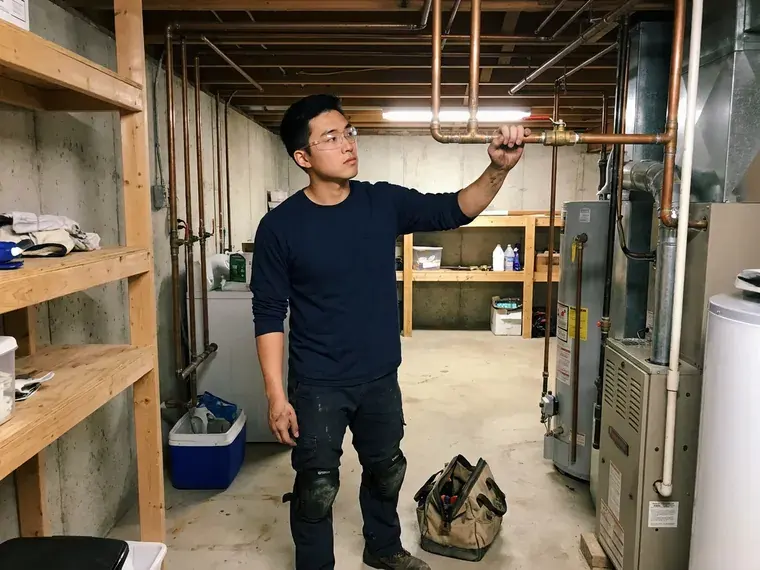

Drain Services in South Jordan, UT
Clear drains, clear answers. Drain services for South Jordan, UT homes and businesses.
- Hydro Jetting Available
- Video Camera Scopes
- Same-Day Clog Removal
- Hydro Jetting Pros
Get Your Drains Moving in South Jordan, UT.
Cable, jetter or camera, the tool fits the clog.
Drain Services in South Jordan, UT With Cameras and Jetting
BPK Plumbing clears drains from the bathroom sink to the city sewer, using the tool that fits the clog instead of the one that happens to be on the truck. Utah water is among the hardest in the country in many areas, and scale builds up quickly in water heaters, faucets and appliances. Scale, grease and hair cause most of what we see. Each one responds to a different method, which is why diagnosis comes first. Then we clear it.
Some of what we do:
- Trenchless sewer repair and replacement
- Cable cleaning for sinks, tubs, showers, toilets and floor drains
- Camera inspection with line locating and depth readings

Additional Drain Services Services in South Jordan, UT
From stubborn kitchen clogs to main sewer backups, our drain services in South Jordan, UT restore full flow fast and keep it that way.



Customers
Why Choose BPK Plumbing for Drain Services in South Jordan, UT?
Drains connect to everything. A main line backup can push sewage into the lowest drain in the house, often a basement floor drain or a first-floor shower, so we clear the main fast and check for any backflow damage. Speed matters.
- Area Experience, Our crews clear drains around South Jordan most days of the week.
- Local Knowledge, We know the pipe materials common in South Jordan homes and where trouble starts.
- Right Equipment, Each clog gets the right machine.
Citywide Coverage
We clear drains in homes all over South Jordan, from older neighborhoods with cast iron and clay pipe to newer houses with early PVC problems. The method changes with the clog. We can usually come today.
Experienced Team
Our crews clear drains nearly every day. That repetition matters. They know how to protect floors, how to handle sewage safely, and how to finish cleanly.
Safety-First Approach
We protect the house during drain work. Drop cloths go down where we walk. When we pull a toilet or open a cleanout inside, and protect the surrounding area. Clean finish.
Trusted Certified South Jordan Plumbing Services Professionals
At BPK Plumbing, we are proud to offer certified plumbing services throughout South Jordan, UT. Credentials matter in this trade. Every repair, install and maintenance visit follows strict safety and quality rules, and the plumbers doing the work carry recognized industry credentials.
Call Us Now PHCC Plumbing Contractor Recognition
PHCC Plumbing Contractor Recognition Better Business Bureau (BBB) Accreditation
Better Business Bureau (BBB) Accreditation Angi Certified Pro
Angi Certified Pro ISO 9001 Quality Management Certification
ISO 9001 Quality Management CertificationDrain Services in South Jordan, UT
Sewer Line Repair Options in South Jordan
Not every damaged line needs full replacement. A single cracked or offset joint can often be fixed by digging one hole and replacing that section, which costs less long term. The camera shows which.

Yard and Storm Drain Clearing in South Jordan, UT
Yard drains clog with silt, leaves and roots. Puddles form near the house. We clear them with a cable or jetter and confirm flow with a garden hose, before the next big storm. Simple maintenance.
Main Sewer Line Cleaning in South Jordan, UT
A clogged main shows up as backups at the lowest drains first. We go in through the outdoor cleanout. A large cable machine with a root-cutting head clears most main line blockages, and when roots or grease are heavy, we follow up with a jetter to scrub the pipe walls clean. Then we camera it.
Kitchen Drain Clogs in South Jordan
Most kitchen clogs start with grease. It goes down warm and liquid, then cools and sticks to the pipe walls, catching food scraps and soap until the drain slows to a trickle, and a cable usually opens it temporarily but jetting removes the coating. Keep grease out.
Sewer Line Cleaning and Root Removal in South Jordan
Tree roots chase moisture into sewer lines. Once inside, they grow into a mat that catches paper and waste, so cutting plus jetting gives the cleanest result. Roots return.
Emergency Drain Unblocking in South Jordan, UT
Sewage coming up a drain cannot wait. Stop running water in the house, keep people away from the affected area, and call us, because a full main line backup can flood a basement or bathroom in minutes, and our crews can usually get there the same day and open the line fast. Then we clean up.
Commercial Drain Maintenance in South Jordan, UT
Commercial kitchens need a schedule. Grease builds fast in busy kitchens, and a clogged drain during a dinner rush costs more than any maintenance plan would, so we jet kitchen lines on a set schedule and keep records for the health inspector. Plans available.

Drain Cleaning for Sinks, Tubs and Showers in South Jordan
Bathroom drains clog with hair and soap scum, kitchen drains with grease and food scraps. Access comes through the trap or a cleanout. A hand auger or small cable machine clears most fixture clogs in under an hour, then test the drain with a steady flow. Utah water is among the hardest in the country in many areas, and scale builds up quickly in water heaters, faucets and appliances. Mineral scale makes it worse.
Drain Services Near Me in South Jordan, UT
Need drain service near you? Let us know which drains back up first. That points us to the likely problem, and a visit in South Jordan usually takes an hour or two, which keeps it simple. No runaround.
Our crews clear drains around South Jordan every day. Similar homes have similar problems. If your neighbor has roots in the sewer, you might too, which gives us a head start. Experience helps.
BPK Plumbing at a Glance
- Licensed and insured plumbers serving South Jordan, UT
- 24/7 emergency service with same-day scheduling
- Clear written estimates, no hidden fees
- 4.8-star rated by 470+ Utah customers
South Jordan Map
South Jordan Information
- Population
- 84,528
- Area codes
- 801/385/435
- Service area
- South Jordan and towns within a 40 mile drive
- Nearby
- West Jordan, Herriman, Sandy, Taylorsville
Grease, hair, wipes and root intrusion cause the bulk of drain calls, and the right tool depends on where the clog sits.
Talk to a Plumber
Call BPK Plumbing for honest, reliable plumbing from people who know the trade in South Jordan, UT.
Our Specialized Plumbing Services in South Jordan, UT
At BPK Plumbing, we handle the full list of plumbing services across South Jordan, UT. We go from leak detection all the way to full system installations, for homes and commercial buildings, and we do it quickly at a fair price. Here are the core services we offer:


Our Drain Service Steps in South Jordan, UT
Every drain job in South Jordan follows the same basic order: diagnose, clear, test.
Call Us
Call (385) 543-4073 and tell us which drains are slow. We give you an upfront price.
Diagnose the Clog
We locate the clog and pick the right tool. Then we get to work.
Clear and Test
We clear the line, run water to confirm flow and explain the cause.
Frequently Asked Questions About Drain Services in South Jordan
Simple snaking often runs $150 to $350. Hydro jetting or main line clearing can be $400 to $800 or more. The price depends on how complex the clog is, where it sits in the system, and whether we need to camera the line afterward to find the cause. Estimate first.
Keep grease out of the kitchen sink. Use drain screens in showers and tubs, skip flushable wipes, and run hot water after using the kitchen sink, and schedule a jetting every year or two if you have big trees near the sewer. Simple habits.
We advise against it. They can damage pipes. Chemical cleaners can burn skin, create toxic fumes when mixed with other products, and sit in a clogged drain without clearing it, which makes the job more dangerous for the plumber who comes next. Mechanical clearing works better.
For a small clog, maybe. They often fail on tough ones. Chemicals can damage older pipe, harm septic systems and create fumes when mixed, so they are not a real fix. Mechanical is safer.
Cleaning, no. Repairs usually need one. Sewer line repair or replacement requires a permit and an inspection in most areas, and we pull it, schedule the inspection and keep you updated throughout the process. Signed copy provided.
It is high-pressure water cleaning for pipes. It scrubs the full pipe wall. Jetting is the best choice for heavy grease, mineral scale and root buildup, or when snaking only helps briefly. Camera first.
Most homes do fine without regular cleaning. Homes with big trees near the sewer, a history of clogs or heavy kitchen use often benefit from cleaning every one to two years, before buildup turns into a backup. Businesses need more.
If clogs keep coming back, yes. It shows the cause. A camera can spot roots, cracks, bellies and grease buildup, so you know whether cleaning will last or a repair is needed. Worth it.
Hear From Customers Who Hired Our Plumbing Experts
Jessica T.
We were adding a gas range in a kitchen remodel and needed a new line run from the meter. The plumber pulled the permit, ran the pipe through the crawl space, and had it inspected and approved within the week.
Gas Line Repair · West Jordan, UT
Paul B.
Our pit pump ran nonstop even in dry weather. The plumber found the check valve was stuck open, so the same water kept cycling back into the pit. New valve, new float switch, done in an hour. It runs quiet now.
Sump Pump · Murray, UT
Diane F.
My kitchen faucet had dripped for months and I finally got tired of hearing it at night. BPK Plumbing came out the next morning, replaced the cartridge and the O rings, and tightened a loose base that was letting water under the sink.
Faucet Repair · Taylorsville, UT
Nathan E.
Our tankless heater kept throwing an error code and shutting off mid shower. The tech flushed the heat exchanger, which was full of scale, and replaced a bad flow sensor. Hot water has been steady for half a year now.
Water Heater Repair · South Jordan, UTMark T.
The floor drain in our office break room backed up every few weeks. The plumber ran a cable, then put a camera down and found roots at a joint about thirty feet out. Seeing it on the screen made the decision easy.
Drain Cleaning · Herriman, UTMegan L.
Our upstairs tub drained so slowly that every shower turned into a bath. BPK Plumbing pulled a wad of hair out of the stopper and then snaked the line past the trap. Three months later it still drains fast.
Drain Cleaning · Draper, UT